Backend-focused software engineering student passionate about building scalable, concurrent systems. I pair a deep technical foundation with sharp communication skills and the adaptability to thrive in fast-paced environments. I am actively seeking my first IT internship to bring my proactive mindset and collaborative energy to a professional engineering team.
I am currently in my 4th year studying Informatics Engineering at the University of Buenos Aires (FIUBA). My academic journey has provided me with a deep understanding of object-oriented design, distributed systems, and core software architecture.
While my primary technical stack includes Java (Spring Boot), C++, and Python, I consistently push myself to explore advanced paradigms outside the standard curriculum. This includes tackling complex synchronization primitives, the Actor model, and asynchronous programming utilizing Rust and FastAPI.
Beyond the screen, my commercial experience in fast-paced, customer-facing roles at Equus Argentina has sharpened my communication, adaptability, and problem-solving skills. I am ready to bring this proactive mindset and technical rigor to a professional engineering team.
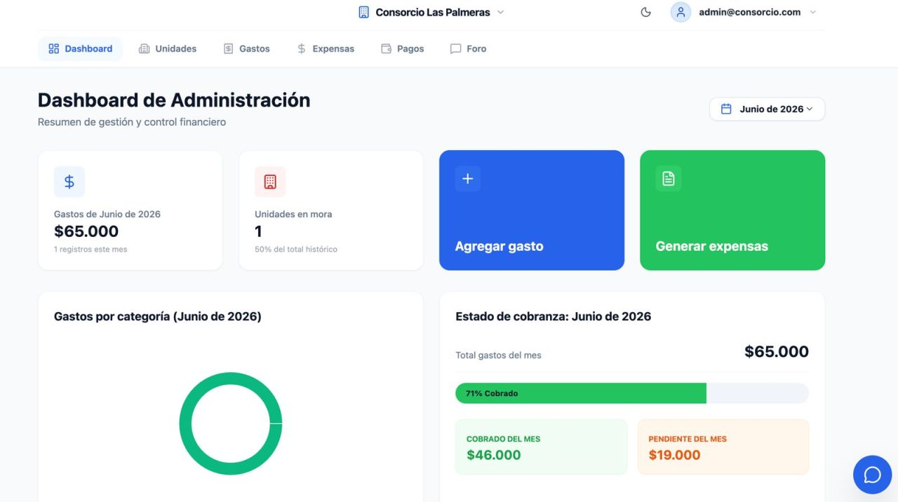
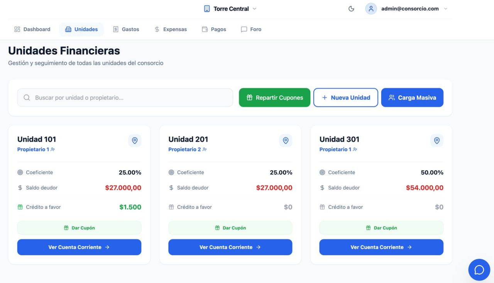
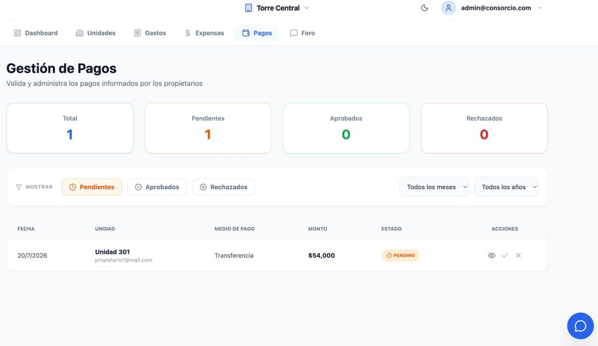
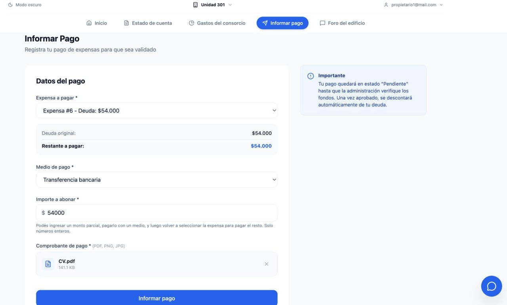
A comprehensive web platform designed to automate building management workflows for administrators and owners. Developed collaboratively, this system tackles complex logic like equitable coproperty distribution and real-time financial reporting.
Tech Stack: Python (FastAPI), React/Next.js, TypeScript, PostgreSQL, and Tailwind CSS.
Engineered a robust REST API featuring Role-Based Access Control (RBAC), automated background email notifications, and dynamic metrics dashboards.
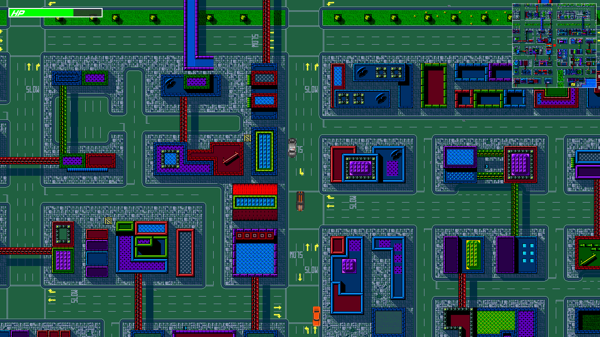
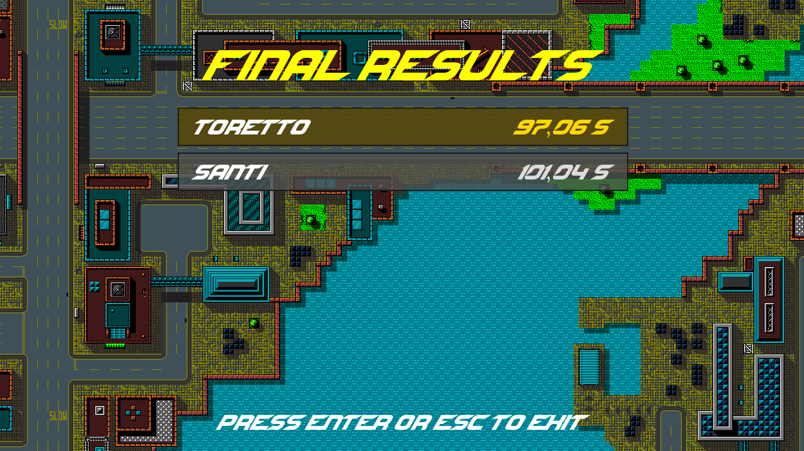
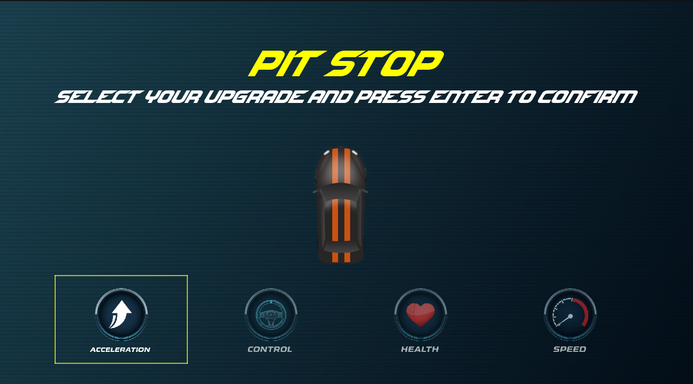
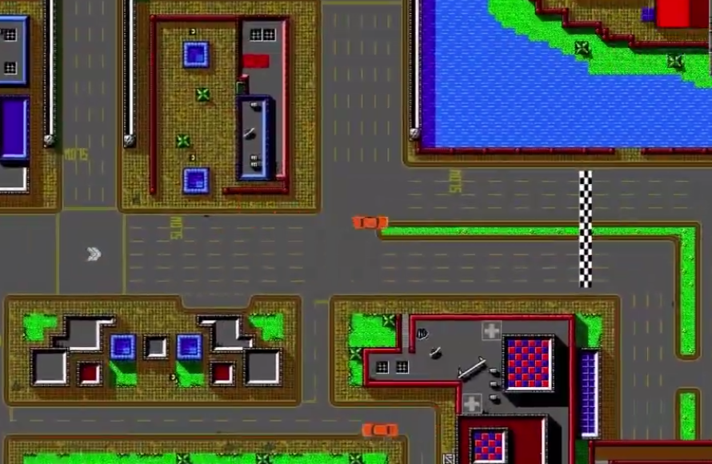
As the Lead Server Developer for this 4-person team, I architected the multiplayer backend for a racing game built entirely from scratch. While my teammates focused on the Qt/SDL2 graphical client, I drove the low-level systems programming, custom networking, and real-time server-side physics calculations.
Server Stack (My Focus): C++20, Box2D, POSIX Sockets, Multithreading, YAML.
Client Stack (Team): Qt 5/6, SDL2, SDL2_mixer.
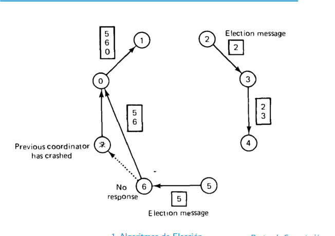
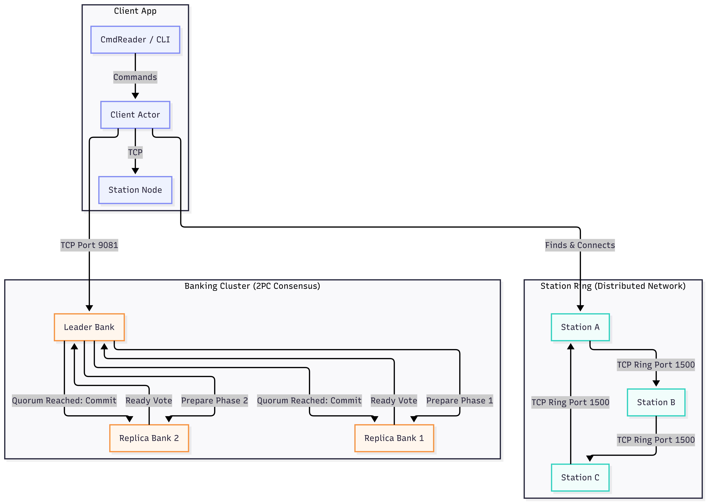
A fault-tolerant, concurrent distributed system built completely from scratch in Rust. The architecture coordinates a network of bike-sharing stations communicating over a logical ring, paired with a replicated banking cluster running a Two-Phase Commit (2PC) consensus protocol.
Tech Stack: Rust, Actix Framework, Tokio (Async Networking), Serde (JSON/Binary Serialization), TCP Sockets.
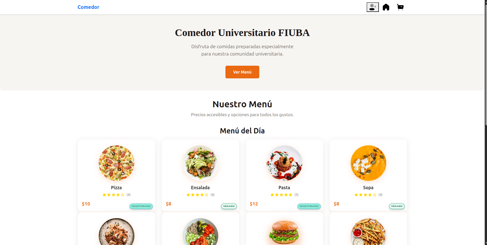
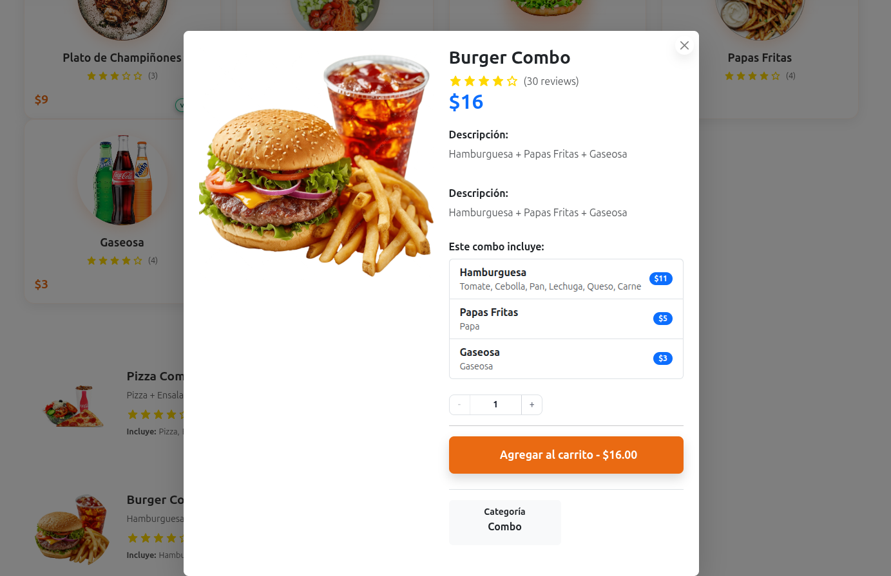
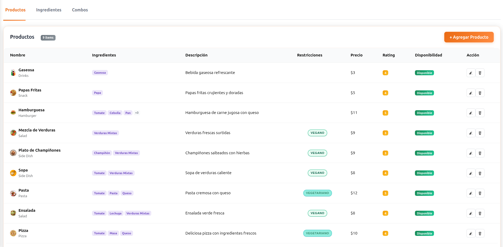
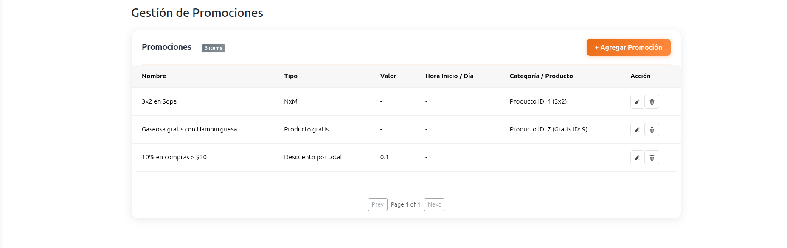
A full-stack web platform designed to streamline ordering and inventory management for a university cafeteria. I drove the development through a strict Agile process while engineering a highly scalable, pattern-driven Spring Boot backend.
Utilized Empathy Mapping, User Personas, and User Story Mapping to prioritize a Minimum Viable Product (MVP) that solved real bottlenecks for both students and kitchen staff.
Tech Stack: Java (Spring Boot), React, TypeScript, PostgreSQL, and Docker.
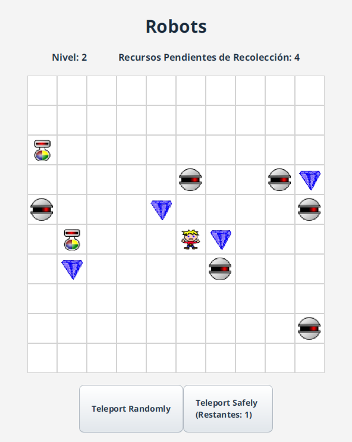
A desktop replica of the classic turn-based Linux "Robots" game. This academic project showcases strong Object-Oriented Programming (OOP) fundamentals, utilizing Java and JavaFX to build a responsive, grid-based graphical interface.
Tech Stack: Java 14, JavaFX 13, Maven.
A purely functional application built in Clojure that parses Lindenmayer systems (L-systems), recursively expands string axioms, and generates complex fractal geometry exported natively as SVG files.
Tech Stack: Clojure, Functional Programming, SVG, Math.
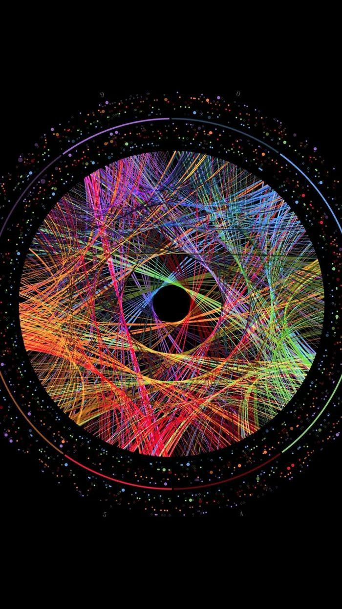
A high-performance, terminal-based recommendation engine built in Python. The application analyzes Spotify data to find relationships between users and songs, generate intelligent recommendations, and calculate overall track importance.
Tech Stack: Python 3, Graph Theory.